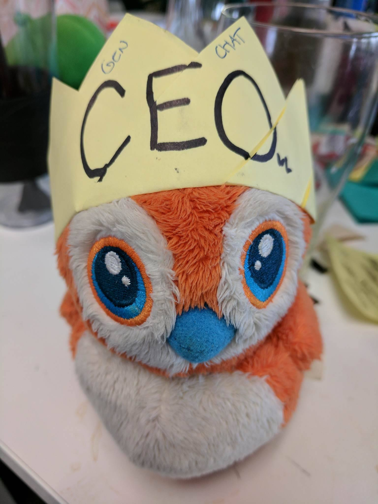

History of Gen.Chat
-
Emily's Work Rants
March 6th, 2017
In an attempt to clean up an excessive number of group chats, Ali created a chat called "Daily Rants with Emily" and proceeded to add every one in their other group chats into this one. Little did these unsuspecting folks know that they had just created the beginning of an era.
-
Our Immaculate Conception
March 6th, 2017
Ali, Allison, Christina, Emily, Jeff, Josh, Nic, Noah, Ryan, Shelby, Steven, Tara -
ABANDONED
March 6th, 2017
After the thirty seconds of great entertainment we gifted her, Allison left us. -
Our First Slide Deck
March 9, 2017
-
The Prodigal Daughter Returns
March 14th, 2017
A FOMO battered and torn Allison was received with open arms
-
Zelda & Crafts
March 15th, 2017
The Nintendo Switch and the accompanying Zelda game was released. Ryan introduced dice dragons to General Chat. Thus, Zelda & Crafts (a General Chat affiliate) was born. The grand opening for the crafting goods and gaming shop is slated for 2025 - you can RSVP on the Facebook event for progress updates.
-
Christian's Gen.Chat Induction
March 17th, 2017
-
Connor's Gen.Chat Induction
March 29th, 2017
-
The Battle of Belltown 1781 (+/- 236 years)
March 30th, 2017
The Battle of Belltown was the first battle of the Escape the Room War, a struggle between the women and men affiliated with General Chat for control of payment for an upcoming plate of nachos. The battle, which was a tenuous victory for the men, ended in a near tie and resulted in the nachos never being delivered.
-
Jacob's Gen.Chat Induction
March 30th, 2017

-
Caracals!
April 1st, 2017
In the shadowy place known as the Puzzled Pint Chat, where every creature is named after a palindrome and there is a monthly ritual sacrifice of brainpower to their gods, a miracle occurred. One of Puzzled Pint's citizens happened upon an ancient GIF depicting a mystical creature which could create a sonic cry reminiscent of metal in a blender and could move each of it's ears independently of one another. This creature was the caracal.

A messenger brought this caracal creature to the attention of General Chat, who then dispatched a convoy to experience these creatures firsthand at the Portland Zoo and report back. On April 1st, General Chat made first contact with these creatures and their lives were never the same again.
-
Taylor's Gen.Chat Induction
April 5th, 2017
Taylor's first GIF contribution to General Chat, foreshadowing many more to come:
-
Peppe named CEO of General Chat Inc.
April 17th, 2017
 -
Church of General Chat, LLC TM
April 18th, 2017
Allison was kind and reminded everyone to do their taxes - and then jokingly recommended that General Chat become a religion with tax-free status. Thus the religion of Peppe, our lordly orange bird, came to be born. Soon after, Josh and Christian were dubbed the first members of the church choir. Nachos were determined to be required for our most sacred and meaningful traditions, and therefore inappropriate to tax. Mimosa named our holy drink, which is only appropriate to consume after one's baptism with tequila.
Our taco in Cabo, hollowed be thy shell.
Thy toppings come, thy will be ate,
over chips as it is with nachos
Give us this day, our daily tortilla,
and forgive us our tequila
as we have forgiven our drunk-ass friends -
Gen.Chat is Born
April 18th, 2017
Despite Tara's warning that ".chat" websites are "def porn sites", we forged ahead and Noah purchased the now infamous domain: http://gen.chat. Plans were made for Shelby to create logo/iconography, Noah to help with vector art, Ryan to copy edit, Ali to design, and Emily to web dev. Feature requests immediately began rolling in and, out of impatience, Ali created the initial bootstrapped landing page that said nothing but "DO EVERYTHING FOR THE NACHOS."
Disclaimer:
-
Jonah's Gen.Chat Induction
April 27th, 2017
-
Josh Exiled from General Chat
April 28th, 2017
Due to a bad pun, Emily uses her no-questions-asked veto to punt Josh from General Chat.
-
The Great Veto Schism of 2017
April 28th, 2017
A simple veto brings into question all that members of General Chat believe about friend group security and how far we should enable each other to go for a joke.
-
The Sacrifice
April 28th, 2017
Ali sacrifices her veto for Josh to bring him back into the fold.
-
Zurka's Gen.Chat Induction
May 13th, 2017